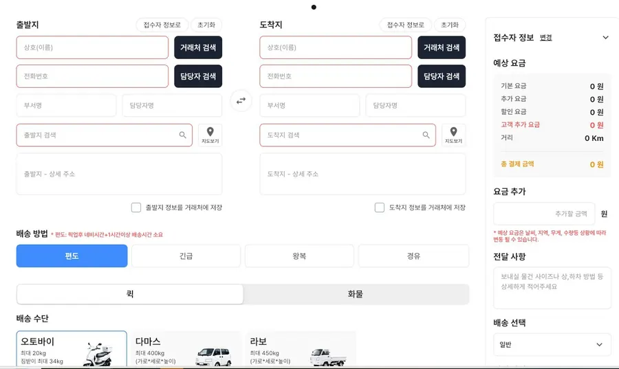
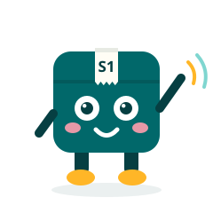
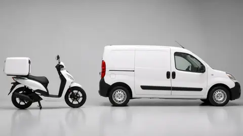
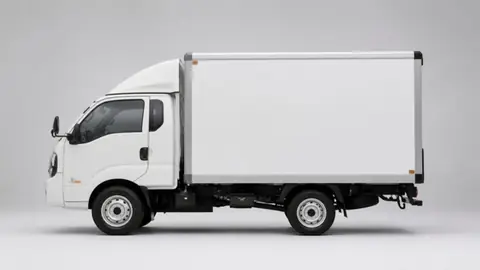
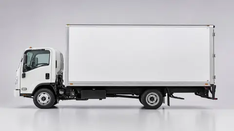
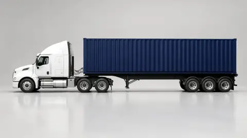
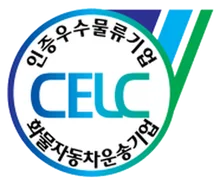
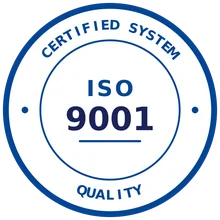
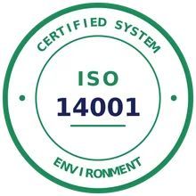
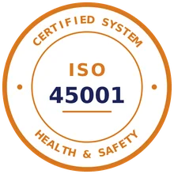

보내는 일, 한 번에.
서류 한 장부터 25톤 화물까지, 웹으로 접수하고 카카오톡으로 확인합니다.
앱 설치 없이 PC와 휴대폰 웹에서 바로 접수됩니다.


서류부터 25톤까지, 창구는 하나
차종마다 거래처를 따로 둘 필요가 없습니다. 중량과 품목에 맞는 차량을 한 창구에서 배차합니다.
| 차량 | 중량 | 구분 | 주로 보내는 것 |
|---|---|---|---|
 | 500kg | 퀵서비스 | 서류, 샘플, 소형 자재. 오토바이, 다마스, 라보로 수도권 당일 배송 |
 | 1~5톤 | 소형 화물 | 정기 운송, 순회 배송, 납품. 카고, 탑차, 윙바디 |
 | 11톤 | 중형 화물 | 파렛트, 벌크, 거점 간 간선. 5톤 축, 11톤 카고, 윙바디 |
 | 25톤+ | 대형 화물 | 장거리, 중량물, 컨테이너. 25톤 카고, 트레일러 |
| 냉장·냉동 | 온도 관리 | 신선식품, 의약품, 축산물 |
담당자는 접수만 하시면 됩니다
배차, 진행 확인, 정산은 에스원퀵이 맡습니다.
- 1
웹 접수
출발지와 도착지를 넣으면 예상 요금이 계산되고 바로 배차가 시작됩니다.
- 2
카카오톡 관제
배차, 출발, 도착, 인수증까지 담당자 전용 카카오톡방으로 알려 드립니다.
- 3
월 1회 정산
한 달 이용분을 세금계산서 1건으로 후불 정산하고 부서별 엑셀 자료를 드립니다.
1992년부터 운송을 해 온 회사가 운영합니다
운영사 삼원종합물류㈜. 야간과 휴일에도 관제 인력이 돌발 상황에 대응하고 대체 배차를 진행합니다.




도입 전에 많이 물으십니다
앱을 설치해야 하나요?
아니요. PC와 휴대폰 웹에서 바로 접수합니다. 계정만 발급받으면 그날부터 이용할 수 있습니다.
결제는 건마다 해야 하나요?
아니요. 한 달 이용분을 모아 세금계산서 1건으로 후불 정산합니다.
부서별로 나눠 볼 수 있나요?
부서와 담당자별로 계정을 드리고, 정산 때 부서별 합계를 엑셀로 함께 드립니다.
도입하려면 무엇부터 하나요?
대표번호로 상담을 요청하시면 이용 규모에 맞춰 요금과 정산 조건을 협의하고, 계정을 발급해 드립니다.
오늘 보낼 것, 지금 접수하세요
급한 건은 대표번호 1600-3173으로 전화 주십시오.